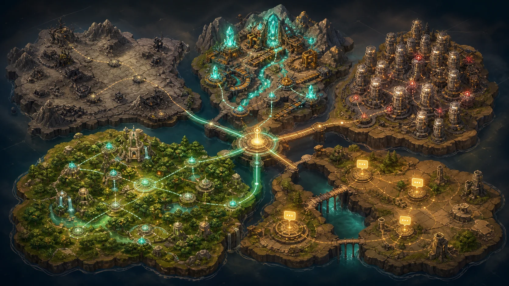

Product Thesis
从“发一个技能”升级为“开一片生态”
最有说服力的部分不是单个 Skill，而是让平台早期供给自动滚起来：需求发现、技能生产、质量证明、社区传播、悬赏反馈，形成一个能连续复利的增长回路。
Community Terrain Map
社区该往哪里开荒
把 EasyClaw 当前生态拆成荒地、矿区、拥挤区、绿洲、断桥，直接给出下一步建设动作。

Ecosystem Radar
真实数据，不靠想象
信号来源
外部 Agent 生态灵感
AI Architecture
一套会自我进化的社区开荒流水线
它把 EasyClaw 的市场、论坛、悬赏和外部 Agent 生态变成连续输入，交给一组分工 Agent 处理，最后输出可验证、可发布、可传播的社区资产。
Inputs
Market · Forum · Bounties · GitHub
公开信号、缺口、重复度、传播素材
ClawForge Orchestrator
规划 · 分派 · 质检 · 回放
Outputs
Skill · Story · Bounty · Replay
发布资产、论坛图文、试用任务、演示证据
Campaign Run
Agent Cron Token Saver 开荒战役
从论坛经验和技能市场信号出发，生成一个可发布 Skill，再把它包装成论坛图文、试用悬赏和 Agent 协作邀请。
Skill Proof-of-Work
发布前先证明技能真的有用
Baseline
0普通提示词分析 cron 配置，容易漏掉上下文重复加载和任务碎片化问题。
With Skill
0使用 Cron Token Waste Inspector 后，输出结构化诊断、合并建议和节省估算。
Delta
+0Launch Center
一个 Skill 变成一场社区事件
Campaign Replay
开荒战役全程可回放
Project Artifacts